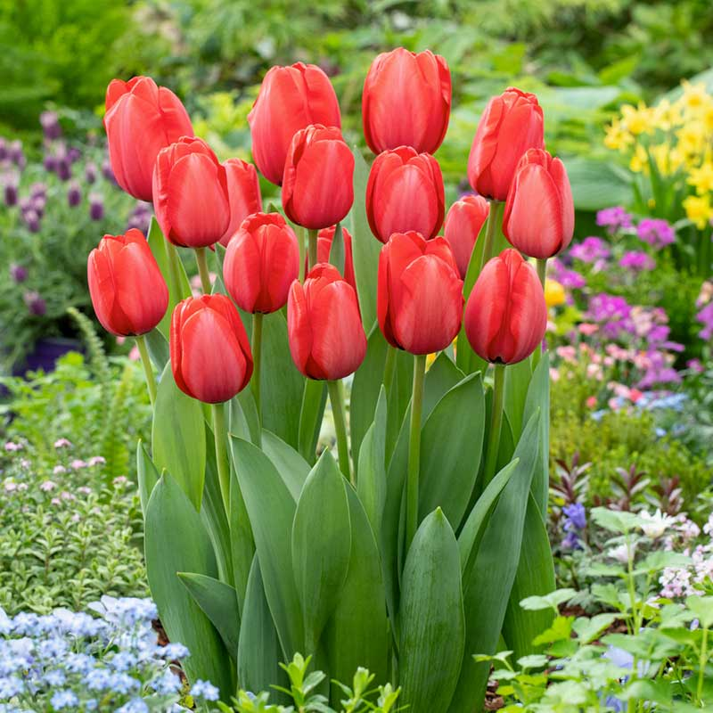

Slovník květin
Růže
- Červená růže je tradičním symbolem vášně a lásky

Pomněnka
- Pomněnky jsou symbolem věrnosti a stálosti, jak lze odvodit i z jejich anglického názvu "Forget me nots"
Narcis
- Ačkoliv se narcis jeví jako krásná jemná kytička, jejím darováním dané osobě naznačíte, že je marnivá a zahleděná do sebe.

Rafflesia arnoldii
- Tato květina, přes její impozantní dojem, je nejsmradlavější květinou na světě. Údajně páchne po hnijícím mase
Tulipán
- Tulipány obecně jsou znamením lásky, ale konkrétně červený tulipán značí dokonalou, neodolatelnou lásku

Konvalinky
- Vyjadřují upřímnou, čistou lásku
- Z anonymního zdroje se ví, že jsou to princezny Veroniky oblíbené květiny
Karafiát
- Vyjadřuje nedočkavost k vyznání lásky a touhu po lásce obdarovaného
- Pozor! Vztahuje se pouze na bílý karafiát!

Orchidej
- Tato květina vyjadřuje exotično a draho
Chryzanténa
- Symbolizue smrt, v některých kulturách (např. Číně) symbolizují nepřízeň a smutek
Zpět na palouk!